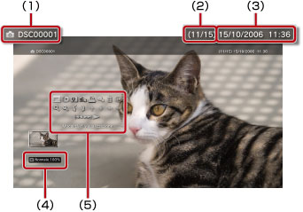

Foto > Utilizzo del pannello di controllo
Utilizzo del pannello di controllo
Il pannello di controllo a schermo consente di eseguire varie operazioni. Il pannello di controllo può essere visualizzato o nascosto premendo il tasto  .
.
Modalità di visualizzazione

Modifica le dimensioni dell'immagine visualizzata sullo schermo.
| Normale | Impostare per visualizzare l'immagine in modo che si adatti alle dimensioni dello schermo senza modificare le proporzioni. |
|---|---|
| Zoom | Impostare per visualizzare l'immagine alle dimensioni massime dello schermo, senza modificare le proporzioni. Le parti dell'immagine nella parte superiore, inferiore, sinistra e destra vengono tagliate. |
Nota
In base al file di immagine, potrebbe essere impossibile modificare la modalità di visualizzazione.
Cambia effetto
Modifica il metodo di passaggio da un'immagine all'altra.
| Normale | Impostare per sostituire l'immagine attualmente visualizzata con l'immagine successiva. |
|---|---|
| Diapositiva | Impostare per sostituire l'immagine attualmente visualizzata con l'immagine successiva in formato galleria. |
| Dissolvenza | Effettuare l'impostazione per utilizzare l'effetto di dissolvenza nel passaggio all'immagine successiva. |
Ritaglio
Consente di eliminare le parti non necessarie in alto, in basso, a sinistra o a destra di un'immagine. Utilizzare le levette sinistra e destra del controller wireless per selezionare l'area da mantenere. Utilizzare la levetta sinistra per scorrere in qualsiasi direzione; la levetta destra consente lo zoom avanti o indietro. Le immagini ritagliate vengono salvate con un nome file differente.
Nota
È possibile ritagliare solo le immagini memorizzate sul disco rigido del sistema PS3™.
Aggiungi a elenco di riproduzione
Aggiungere un'immagine ad un elenco di riproduzione.
Nota
È possibile aggiungere all'elenco di riproduzione solo le immagini salvate sul disco rigido.
Stampa
Stampare un'immagine utilizzando una stampante.
Nota
Per stampare, occorre innanzitutto configurare la stampante in [Selezione stampante] di  (Impostazioni) >
(Impostazioni) >  (Impostazioni della stampante).
(Impostazioni della stampante).
Imposta come sfondo
Consente di impostare come sfondo l'immagine visualizzata sullo schermo. L'immagine viene impostata esattamente come appare sullo schermo (ingrandita, ridotta, ruotata).
Note
- Se non viene utilizzato uno sfondo, regolare l'impostazione in (Impostazioni) >
 (Impostazioni dei temi) > [Sfondo].
(Impostazioni dei temi) > [Sfondo]. - È possibile impostare una sola immagine per volta come sfondo. Se viene selezionata un'altra immagine, quella attuale viene sovrascritta.
Elimina
Elimina le immagini.
Nota
È possibile eliminare solo le immagini salvate sul disco rigido.
Visualizza
Visualizza informazioni su un'immagine. Ad ogni pressione del tasto  , viene visualizzata la schermata con le informazioni su Exif, la schermata con una barra delle informazioni e la schermata senza informazioni aggiuntive.
, viene visualizzata la schermata con le informazioni su Exif, la schermata con una barra delle informazioni e la schermata senza informazioni aggiuntive.
Una schermata con una barra delle informazioni

(1) |
Nome dell'immagine |
|---|---|
(2) |
Numero immagine/numero totale immagini |
(3) |
Data e ora di registrazione |
(4) |
Icona di stato |
(5) |
Pannello di controllo |
Zoom avanti/Zoom indietro

Consentono di eseguire lo zoom avanti o indietro per ingrandire o ridurre un'immagine. È possibile utilizzare la levetta sinistra del controller wireless per scorrere in qualsiasi direzione; la levetta destra consente lo zoom avanti o indietro.
Ruota a sinistra/Ruota a destra
Ruotano l'immagine di 90 gradi a sinistra o a destra.
Su/Giù/Sinistra/Destra
Spostano l'immagine per visualizzare le parti nascoste, ad esempio quando (Modalità di visualizzazione) è impostato su [Zoom].
Precedente/Seguente
Visualizzano l'immagine precedente o successiva.
Galleria
Visualizza automaticamente ciascuna immagine, nell'ordine.